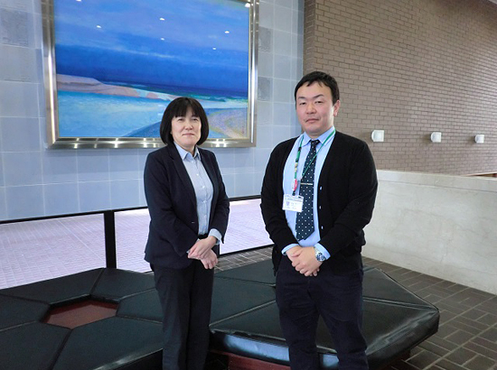
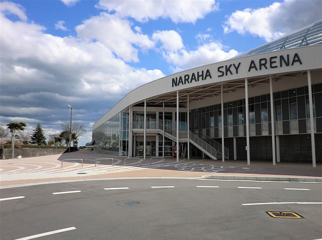

被災地のいま 宮城県・福島県の現状
「被災地のいま」 ～福島県楢葉町～
第81回 2020年5月5日 ――地域とスポーツ―
戻ってきた人たちが笑顔になれるスポーツの町づくり
福島県楢葉町
楢葉町は、サッカーのナショナルトレーニングセンター「Jヴィレッジ」で有名な町です。
「多数の天然芝のサッカーコートを有する日本最大規模の施設があることが町民の自慢の一つだった」と楢葉町教育委員会の手島健祐さんは言います。町はスポーツ振興に取り組み、地区対抗などのスポーツ大会も活発に行われていました。しかし東日本大震災に伴う原発事故で町の大半が警戒区域に指定され、町民も避難を余儀なくされました。またJヴィレッジも事故収束のための前線基地となり、スポーツ施設としては使えなくなりました。
避難指示が解除され、町に住民が戻り始めたのは2015年9月です。町では道路や建物などの復興を急ピッチで行なった後、農業や教育などの重要施策に本格的に着手しました。重点施策の柱の一つが「健康増進とスポーツ振興」です。町ではそれを「楢葉町スポーツ推進基本計画」（以下、基本計画）としてまとめました。
‘18年7月に再開したJヴィレッジ、‘19年4月にオープンした屋内体育施設ならはスカイアリーナが、基本計画の策定を後押ししました。「スポーツを通じて町を盛り上げていこうという機運が生まれたのは、この2つの施設があったから」と手島さん。2つの施設は同時に復興のシンボルでもありました。
基本計画のテーマは「スポーツを通じて楢葉町の住民が誇りを持って暮らせる町づくり」です。
楢葉町教育委員会の髙木さつきさんは「楢葉に戻ってきた人たちが、スポーツを“する”だけでなく“見る、支える、楽しむ”と様々な形でスポーツに関わる町、スポーツを通じて笑顔が生まれる町になってほしい」と話します。例えば“する”では、幼児や高齢者でもできるウォーキングサッカーなど広義のサッカーの取り組み、“支える”ではスポーツボランティア登録制度の導入など、誰もがスポーツに携われるような環境づくりを進めます。
さらに基本計画では、町外へのアプローチとしてスポーツ合宿の誘致や宿泊型の保健指導などスポーツツーリズムの推進を上げています。
楢葉にはJヴィレッジやならはスカイアリーナなど、観光しながらスポーツをし、健康増進を図ることのできる施設が整っています。「楢葉に来ていただいて楢葉の良さを分かっていただく。そうした取り組みが交流人口につながることも期待したい」と髙木さん。
帰還した町の人々が誇りを持って暮らせるよう、きめ細かな施策でスポーツのまち楢葉の再生と復興は進められていきます。

▲楢葉町教育委員会総務課課長の髙木さつきさん（左）と同主査の手島健祐さん。「計画の中には実際始まっている事業が幾つかあります。状況を見ながらトライアル、本格実施へと進めていきます」。

▲プールやフィットネスルームを備えた屋内体育施設ならはスカイアリーナ。学校との連携で子どもたちの水泳の授業や部活動に利用されることもあります。
2019年3月21日、みやぎ生協はコープふくしま・福島県南生協と組織合同しました。このコーナーのタイトルも「被災地のいま みやぎ生協・コープふくしまから宮城・福島のいまをお伝えします」に変え、福島県の現状についてもお伝えしていきます。
前の記事
第80回「被災地のいま ～宮城県仙台市～」（2020年4月5日）